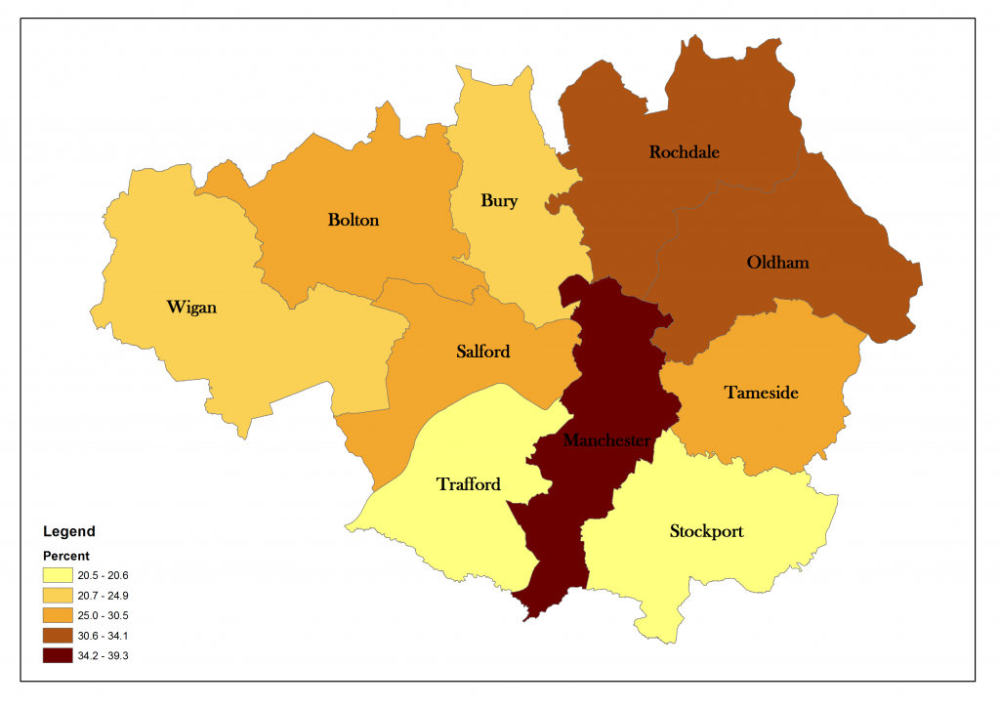
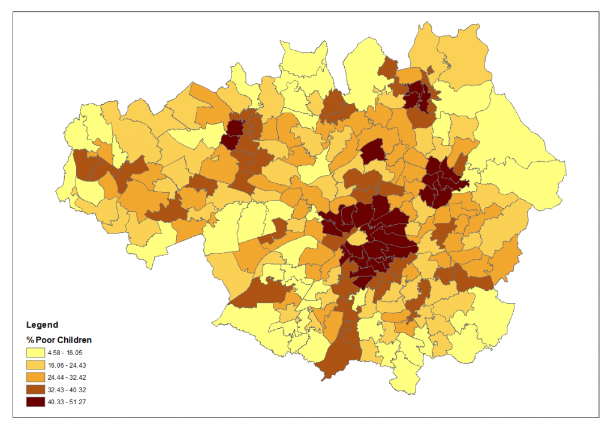

Indicator: The estimated percentage of children living in households on low incomes after housing costs.
Overview
-
On average, more than 1 in 4 children in local authorities across Greater Manchester were living in poverty in 2013.
-
The City of Manchester (39.27 per cent) had the highest rate of child poverty in Greater Manchester in 2013 compared to Trafford (20.54 per cent) which had the lowest.
Child Poverty in Greater Manchester as a whole
- Estimates of child poverty rates are available for local authorities, not for Greater Manchester as a whole. The average rate for local authorities in Greater Manchester in 2013 was 3.22 percentage points higher than the average for England as a whole.
| Chart 1: On average 28.32 per cent of children in Greater Manchester local authorities were living in poverty in 2013. |
Child Poverty in the Different Local Authorities of Greater Manchester
- More than one third (39.27 per cent) of the children in the City of Manchester lived in poverty in 2013. The lowest proportions of children living in poverty were in Stockport and Trafford (Chart 2).
- Salford (30.45 percent), Rochdale (32.4 percent), Oldham (34.11 percent) and Manchester (39.24 percent) are the four local authorities in which almost one third of the children lived in poverty in 2013. (Chart 2 & Map 1).
| Chart 2: The Highest Child Poverty Rate in 2013 was in the city of Manchester (39.3 per cent). |
| Map 1: Highest child poverty rate in 2013 was in Manchester (39.24 per cent).

|
- The Coldhurst ward in Oldham had the highest rate of child poverty in Greater Manchester in 2013 at 51.27 per cent followed by the Moss Side ward in the Manchester city at 49.43 per cent (Map 2).
| Map 2: Highest rate of child poverty was concentrated around Manchester, Oldham and Rochdale in 2013.

|
More about this indicator
- The government does not regularly produce small area measures of child poverty. We therefore use this indicator produced by the End Child Poverty campaign, which produces estimates for mid 2013. The indicator uses tax credit data to give the percentage of children on low incomes in local authorities, parliamentary constituencies and wards across the UK. Children are classified as being in poverty if they live in families in receipt of out of work benefits or in receipt of in-work tax credits where their reported income is less than 60 per cent of median income. Figures have been updated using regional trends in worklessness, so this is an estimate not a direct measure. The data relates to income after housing costs. For more details see: http://www.endchildpoverty.org.uk/why-end-child-poverty/poverty-in-your-area.
{kind=link}
{kind=link}